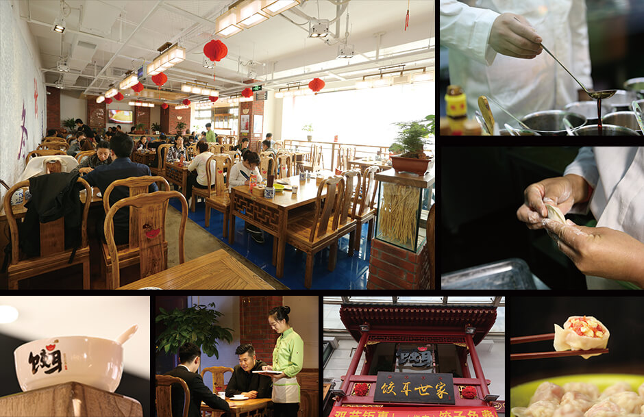

关于饺耳

公司简介

饺耳世家，是全国首家致力于传承千年养生饮食文化的饺子店。 秉承“传以古法，注以新意，精于食材，通于传达。”品牌理念和“养生食疗”的经营宗旨， 让饺子的食疗养生文化在老北京宫廷御厨祖传配方接班人张芳女士的手上，继续发扬光大， 铸就饺耳金质品牌。让饺耳世家成为中国餐饮行业的价值典范。
我们不单纯注重于饺子的口感与味道，同时注重于饺子的营养与功效。 饺子的馅料制作均选用新鲜的原食材，进行合理的营养搭配。自第一道工序开始，通过29道工艺标准，49道工艺流程， 从皮到馅全部纯手工制作，为您奉上传统地道的纯手工水饺。饺子为东汉末年，“医圣”张仲景发明，原名娇耳。 第一个饺子的诞生并不是作为食物，而是作为药引“祛寒娇耳汤”，帮助穷人驱寒暖身，医治冻烂的耳朵。 饺耳世家将遵循1800年前张仲景发明饺子的初衷，让饺子作为美味食物的同时，继续完成它温补身体，养生食疗的使命。 让饺子延续其最初诞生的意义，让大家享受美味的同时养胃健脾，温补身体，吃的美味也吃得健康。
来到饺耳世家，除了美味健康的饺子外，还有其他精美养生菜品售卖。饺耳世家，纯正中国味，等您来尝鲜！
企业文化
1.企业宗旨
秉承“传以古法，注以新意，精于食材，通于传达。”
2.企业使命
传千年饮食文化，树餐饮价值典范
3.企业环境
线下活动
活动一
现在只要到店消费，就送饺子一盘。什么？就吃送的一盘饺子就饱了，不点别的了行吗?小编告诉你，这样也可以
活动二
生日当天持卡消费还将获赠镇店菜、长寿面各一份(详情请质询店内服务员)
活动三
店内充值卡满赠活动正在火热进行。充1000赠100，充5000赠750，最高赠到4000！！！还有金牌饺子券和豪礼相送拿着充值卡，享受会员价
注释：具体活动详情请到店咨询，本活动最终解释权归饺耳世家所有。
人才招聘
饺耳世家正在招聘以下岗位的小伙伴，加入“饺耳团队”来，
1、内容编辑
招聘人数：1-2人
岗位职责：
1、完成相关约稿、采访和文章撰写工作；
2、根据全球移动互联网行业热点，及时撰写文章；
3、编译外文；
4、完成交办的其他临时任务。
1、内容编辑
招聘人数：1-2人
岗位职责：
1、完成相关约稿、采访和文章撰写工作；
2、根据全球移动互联网行业热点，及时撰写文章；
3、编译外文；
4、完成交办的其他临时任务。
1、内容编辑
招聘人数：1-2人
岗位职责：
1、完成相关约稿、采访和文章撰写工作；
2、根据全球移动互联网行业热点，及时撰写文章；
3、编译外文；
4、完成交办的其他临时任务。
地 址：北京市朝阳区朝阳路69号
电 话：010-80850472 18910622378 王经理
面试时间：周一到周日 上午10:00到 下午17:00
有意者请携带简历，在上述时间直接参加面试，无需预约。
错过招聘时间，有意加入公司者可与王经理电话联系，另行约定面试时间。
联系我们
饺耳世家
北京市朝阳区朝阳路福福满街69号
张经理
010-80440188
jiaoear@126.com